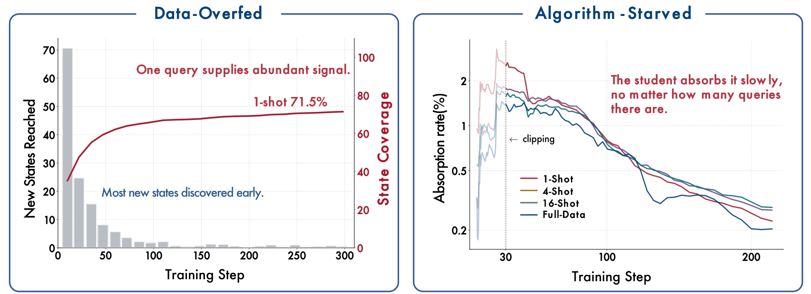

One-Shot OPD: Rethinking On-Policy Distillation II — One Training Example
Paper: "Rethinking On-Policy Distillation of Large Language Models II: One Training Example" (arXiv 2609.04172, Sep 3 2026). Authors: Zixuan Fu, Bingxiang He, Yuxin Zuo, Haohuan Huang, Jinqian Zhang, Ruhang Xiao, Cheng Qian, Qinyu Luo, Huan-ang Gao, Yudong Wang, Zhiyuan Liu, Ning Ding, Chaojun Xiao — the group behind the original "Rethinking OPD" (arXiv 2604.13016).
TL;DR
- OPD trained on a single query keeps improving for hundreds of steps and recovers most of full-data OPD's gain: 87% of the full-data gain at step 300 on math (68.5 vs 69.8 averaged over MATH-500/AIME-2025/AMC-2023), robust across three model families, four task domains, query difficulty, length caps, and temperature.
- The explanation is a two-sided diagnosis: OPD is data-overfed but algorithm-starved. Data side: one query's rollouts already reach 71.5% of the state-space clusters full-data OPD visits (16 semantically diverse queries reach 98.9% and match full-data). Algorithm side: the student's absorption rate — the fraction of remaining teacher–student distance removed per update — decays identically whether you train on 1, 4, 16, or 17k queries.
- Practical upshots: 16 diverse queries per domain match full-data multi-teacher OPD (101% of its gain); even content-light templates and off-domain WildChat queries approach the real-query baseline; and the binding constraint on OPD progress is step efficiency of the update rule, not data curation.
Why this matters
OPD is now a default post-training stage (Qwen-style strong-to-weak pipelines, MOPD-style multi-teacher consolidation), and the community's instinct has been to treat it like RL or SFT: curate bigger, harder, more diverse query sets. This paper says that instinct mostly optimizes the wrong margin. Because the teacher supplies a dense, local target at every visited state — not a sparse trajectory-level outcome — a single prompt's rollouts generate an enormous supervised surface, and the student can't even absorb that. If the bottleneck is absorption, the leverage is in the algorithm (how much of the per-state gap each update closes), not in the data pipeline.
There's also a sharp contrast with one-shot RLVR, which the paper tests head-to-head on the same query: over 1000 steps OPD closes 72% of its teacher gap and gains more than twice RLVR's validation improvement (matched by steps or by rollout tokens). RLVR's signal dies when the group's outcomes become unanimous; OPD keeps learning from residual per-token gaps after the query is solved. For anyone choosing between distillation and RL for a given capability, "how much signal per rollout" now has a concrete answer with a mechanism behind it.
The core idea

Figure 2 from the paper: OPD is data-overfed (one query supplies abundant states, discovered mostly in the first 100 steps) but algorithm-starved (the student absorbs an ever-smaller proportion of the remaining teacher–student gap, no matter how many queries it trains on).OPD minimizes a per-token KL between student and teacher on the prefixes the student actually visits:
where \(s_i=(x, y_{<i})\) is a student-generated prefix ("state"), \(\pi_\theta\) the student, \(\pi_T\) the teacher. In practice the per-token advantage is either the sampled-token log-ratio \(A_i^{\mathrm{OPD}}=\log\pi_T(y_i\mid s)-\log\pi_\theta(y_i\mid s)\) or a top-\(k\) truncation of the divergence.
The paper's move is to push OPD to the data-minimal limit — one query — and then explain why that barely hurts. The unit of OPD supervision is not the query but the state \(s\): every rollout token creates a fresh prefix, and fresh rollouts are drawn every step. The hypothesis: one query suffices iff its rollouts cover a broad part of the state space full-data OPD visits.
State coverage makes that measurable. States are represented by their teacher signature \(h_T(s)\) (the teacher's final-layer hidden vector at the state's last token); the reference states visited by a full-data run are partitioned into \(K=200\) clusters by PCA + K-means, and a setting's coverage is the fraction of clusters its rollouts reach:
with \(c(s)\) the nearest cluster of state \(s\). A held-out slice of full-data rollouts scores 100% under this construction, so the scale's top is attained, not merely nominal.
How it works
The experimental grid: three student–teacher families on math (R1-Distill-Qwen-1.5B ← JustRL-1.5B; Llama-3.2-3B-Instruct ← GT-Llama-3B-Math; OLMo-3-7B-Instruct-DPO ← OLMo-3-7B-Instruct), plus code (← Nemotron-1.5B-v2-RLVE), instruction following (← UltraData-IF-1.5B), and agentic tool use (Qwen2.5-Coder-1.5B ← Hammer2.1-1.5b). One-shot math queries are chosen at easy/medium/hard difficulty by the student's pre-training pass rate (8/8, 4/8, 0/8).
One-shot OPD (per optimization step t):
x ← the single training query (fixed for the whole run)
for b in 1..64: # batch of rollouts, all from x
y_b ~ π_θ(·|x) # fresh on-policy rollout
for each position i in y_b:
s_i = (x, y_b,<i)
A_i = log π_T(y_b,i|s_i) − log π_θ(y_b,i|s_i) # (or top-k form)
update θ by policy gradient with per-token advantages A_i
Diagnostics logged each step:
Cov(S_t): fraction of full-data reference clusters visited so far
d_t = mean |log π_T − log π_θ| over visited positions # distance
v_t = (d_t − d_{t+1}) / d_t # absorption rate
The two diagnostic quantities do the explanatory work. The distance
is the average magnitude of teacher–student disagreement over the positions \(\mathcal{T}_t\) visited at step \(t\); the absorption rate \(v_{t}=(d_{t}-d_{t+1})/d_{t}\) is the proportion of that distance one update removes.
Findings, in order:
- Coverage is front-loaded and high. One-shot OPD reaches 65.9% coverage by step 100 and 71.5% by step 300 — repeated rollouts from one query keep discovering new clusters at a sharply diminishing rate, while validation accuracy climbs from 59.1 to 66.9 (vs 70.8 full-data).
- Diversity buys the rest. Selecting one representative from each of 16 BGE-M3 semantic clusters lifts coverage to 98.9% and matches full-data accuracy. Diversity is the operative property, not volume.
- Alignment slows the same way regardless of data. All four runs (1/4/16/17k queries) remove 78–84% of their step-30 distance by step 300, and their absorption rates decay by similar factors. The pace of alignment is a property of the OPD update, not the training set. Even on a fixed set of states, absorption takes hundreds of steps.
- Content can come apart from coverage. Content-light templates and off-domain WildChat queries as OPD inputs still approach the real-query baseline on math — the input's job is to be a state generator, not a curriculum.
Results
Beyond the headline math numbers (87% of full-data gain at step 300; 62–89% band through step 1000), the one-shot effect replicates across families — R1-Distill-1.5B 77.1→85.5, Llama-3B-It 28.2→40.2, OLMo-7B-It-DPO 70.8→82.4 on math — and across domains: 73% (code), 66% (instruction following), 64% (agentic tool use) of the respective teacher gaps recovered. In multi-teacher OPD (one student, three domain teachers), 16 diverse queries per domain recover 101% of full-data MOPD's gain (52.9 vs 52.8 average accuracy, from a 43.5 base), with per-domain proportions of 93%/136%/109%. Full-data MOPD itself lands within 1.0 point of three separate full-data OPD runs.
How it connects
This is a direct sequel to the tracker's OPD lineage: it gives a mechanism for why Survey: On-Policy Distillation for LLMs methods are so sample-efficient, and reframes the data-scaling assumptions in Open-MOPD and On-Policy Distillation Isn't a Free Lunch (MOPD) — if 16 diverse queries per domain match full data, MOPD's cost story changes substantially. The "absorption is the bottleneck" claim is exactly the margin that algorithmic variants like Weak-to-Strong OPD (proxy-teacher construction), DAPD, and OPSA's entropy-adaptive negative updates are implicitly attacking, and it pairs naturally with the one-shot RLVR comparison for the RL-vs-distillation question that runs through Training Agents Inside Their Harnesses. The state-coverage methodology (teacher-signature clustering) also looks reusable for auditing any on-policy pipeline's effective data diversity.
Critical take
The gap left open is the one the title implies: why absorption slows. The paper measures the decay cleanly but doesn't isolate its cause (optimizer geometry? capacity mismatch on rare states? teacher noise floor?), so "direct future work toward step efficiency" is a pointer, not a result. Second, the students are small (1.5B–7B) and the teachers are same-family and near-scale; at frontier scale with much larger teacher–student gaps, one query's rollouts may cover far less of the teacher-relevant state space, and coverage-vs-absorption could rebalance. Third, state coverage is measured in the teacher's representation with K=200 clusters — the appendix shows robustness to K and construction, but coverage of coarse clusters can overstate coverage of fine-grained skills (a cluster "reached" once is counted like one visited constantly). Finally, the validation suite for math is three contest benchmarks; one-shot OPD matching full-data there doesn't yet establish that narrow-input OPD preserves broad-distribution behavior — the WildChat result is suggestive but measured on the same target domains (inferred from the paper's evaluation setup — verify against the appendix).
If you remember three things
- One training query sustains hundreds of productive OPD steps and recovers ~72–87% of full-data OPD's gain, across families and domains — because OPD's supervision unit is the state, and one query's fresh rollouts cover 71.5% of the states full-data training visits.
- The binding constraint is absorption, not data: the fraction of remaining teacher–student distance removed per update decays on the same schedule for 1 query and 17k queries. Data curation can't fix an algorithm-starved regime.
- 16 semantically diverse queries ≈ full data (98.9% coverage, 101% of full-data MOPD gain). If you're running OPD pipelines, diversity-select a handful of queries per domain and spend the savings elsewhere.